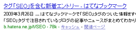
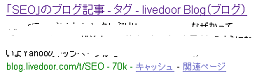
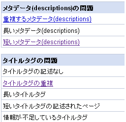

ブログを作成するとデフォルトで検索窓がついていますが、シーサーブログの場合はもともとヤフー検索と連動している検索窓になっているようです。
そのほかにも、自分でカスタマイズな検索窓を設置しようと思ったら、google や msn の検索窓、ヤフーのカスタムサーチを使用して作ってみるとオリジナルなサーチボックスが出来上がるようです。
今回はヤフーカスタムサーチをブログに設置してみました。
ブログにヤフーカスタムサーチを設置の続き「ブログカスタマイズ」の記事一覧です。主に、ブログの作り方や作成方法の情報を更新してます。そのほか、Seesaa blog のカスタマイズ方法やアフィリエイト情報、ホームページ作成方法なども、、
ブログを作成するとデフォルトで検索窓がついていますが、シーサーブログの場合はもともとヤフー検索と連動している検索窓になっているようです。
そのほかにも、自分でカスタマイズな検索窓を設置しようと思ったら、google や msn の検索窓、ヤフーのカスタムサーチを使用して作ってみるとオリジナルなサーチボックスが出来上がるようです。
今回はヤフーカスタムサーチをブログに設置してみました。
ブログにヤフーカスタムサーチを設置の続き今日のブログカスタマイズは、リンクタグの色彩をスタイルシートの a:hover や a:visited を使ってカスタマイズしようと思います。
訪問したことのあるリンクの色が変わるとか、リンクタグにカーソルを合わせると浮き上がるとかのCSSですが、訪問したことのあるリンク(a:visited)を何色にすればいいのかが若干難しかったりです。
リンクタグをCSSでブログカスタマイズの続き今日のブログカスタマイズは、タグページのタイトルタグや説明文をSEO的にカスタマイズしようと思います。タグページの例としてはてなダイアリーやライブドアブログなんかのを見てみると、こんな感じになっているようなんです。
はてなタグ

ライブドアブログ

ブログのメタデータには、キーワード設定とかブログ説明というのがありますが、最近ウェブマスターツールにログインしてみたら、以前よりもコンテンツ分析の問題が細分化されているような気がします。

メタタグの重複とかは正直、無料ブログではどうしようもないというのもあるので、ほったらかしにしてたんですが、それに加えて長すぎるものや短すぎるものも問題みたいなんで修正してみようかなと思うんです。
ブログのメタデータをカスタマイズの続き重いブログの原因はたくさんあるかと思いますが、無料ブログサービスを利用している場合、たくさんの人が共有して使っているので重いのはしょうがないことかなと思います。
それでも少しでもブログを軽くする方法として、htmlを軽くしたり、１ページの表示件数を減らしたり、画像の軽量化やスタイルシートの外部化などのブログカスタマイズをすると、若干ですが、重いブログが軽くなるかと思います。
重いブログを軽く速くする方法の続き